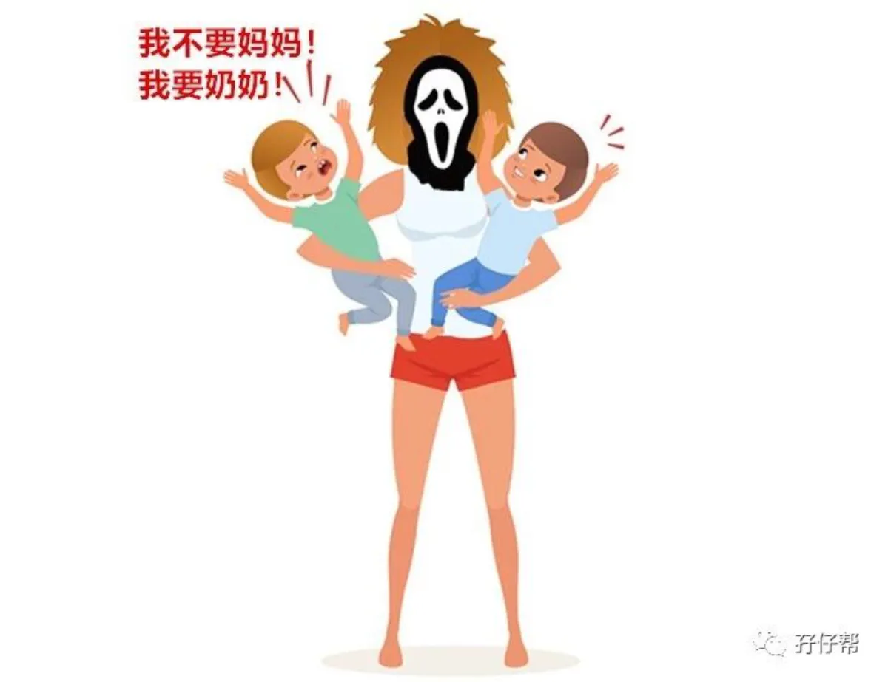
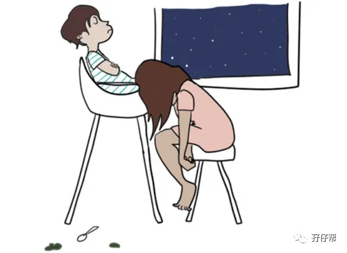
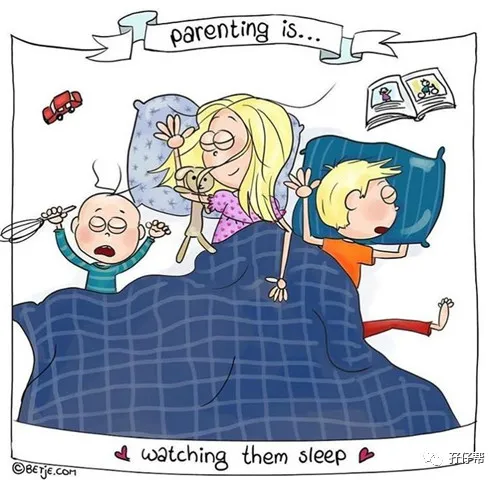
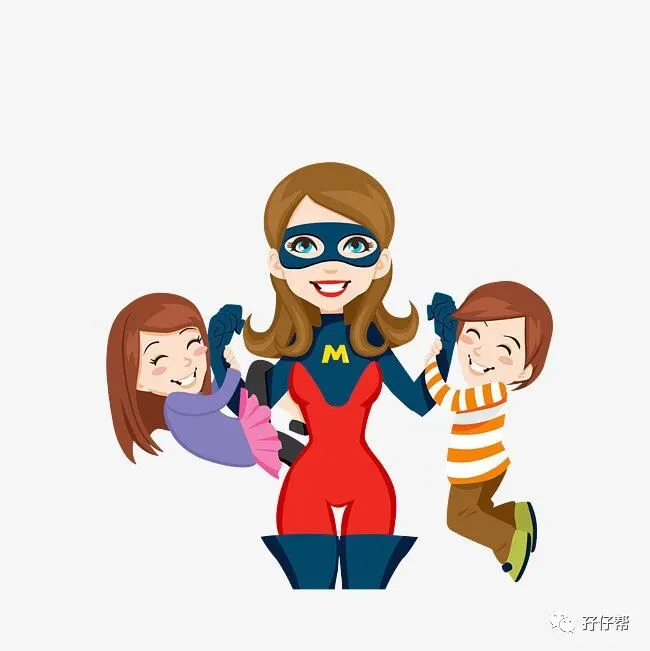

文|圆圈妈，一个文思如尿崩的双胎妈妈
图|来自网络，如有侵权，请联系删除
· 正 · 文 · 来 · 啦 ·
后台收到一位双胞胎妈妈的咨询：
亲，请教一个问题，圆圈兄弟在一岁之前是怎么带的呀?我家宝宝现在四个月，现在晚上睡觉奶奶带弟弟，我带哥哥睡，结果我发现最近弟弟和我不怎么亲，我很焦虑，怎么破?
有类似烦恼的双胞胎家庭，应该不在少数，特别是家有老人或保姆帮忙带孩子的家庭，常见现象就是：双胞胎只跟陪睡的那个人亲，这让妈妈们很嫉妒，今天的推文一起探讨下！
【01】
孩子从小跟谁睡就跟谁亲？
我家的情况如下：
0--3月龄，公婆带俩娃睡，
4月龄，我和队友带一个睡，公婆带另一个睡，每隔一周换一次，如这周我和队友带圈圈睡，下一周则带圆圆睡。
5月龄，我和队友带俩娃睡，一直睡到现在4岁。
刚开始没有陪娃睡，我的确有与孩子不亲的感觉，也许是我剖腹产，没有经历过产前阵痛，产后也没有母婴同室，没有喂母乳的缘故。
我总感觉我对刚出生的圆圈没啥好感，对他们的哭声没有反应，甚至很冷漠！不管他们哭得多么撕心裂肺，我都没有要去安抚他们的欲望，除了是伤口真的痛到动弹不得，更多的是，我的心没有要求我努力去做！
一直到陪他们睡，经历那些频繁夜醒和数不清的拼凑式睡眠后，我才对两儿子产生又爱又恨，错综复杂的情感。
而圆圈呢？貌似对我这个老母亲也没太多感觉，他们似乎更粘着婆婆多一点。
有阵子换着睡，睡到半夜，圈圈醒来发现身边的人不是他熟悉的奶奶，拼命地大哭，我去抱他，他很抗拒，哭得更凶，直到被婆婆抱走才安抚下来！
当时我特别沮丧，也很不服气，我才是妈！为何我的亲生儿子不要妈妈只要奶奶！
难道真的验证那句话“孩子从小跟谁睡就跟谁亲”？
心理学有一个依恋关系，孩子从小跟谁睡，心理上就会跟谁更亲近。
圆圈跟奶奶多亲近些，可能是觉得只有在经常陪睡的奶奶身上才能体验到百分百的安全感。
而我总觉得圆圈亲奶奶不亲我，也许是自己平时缺少陪伴，对圆圈了解不够，产生自卑和内疚感，从而滋生这种嫉妒心理。
我想，大多数妈妈们都GET 到这一点了，对孩子们更亲近外人很不爽，并打心眼里不想让老人或保姆陪娃睡，而是恨不得把自己劈成两半，一半去赚奶粉钱，一半去陪娃睡。
【02】
双胎之一跟我不亲，怎么破
关于双胞胎怎么睡的问题，其实，如果你有看权威育儿手册，应该知道最好最安全的办法是，让两宝宝各自睡小床，而不是大人陪睡在旁。
很多指南都不建议母婴同床，理由是因婴儿猝死综合症（SIDS）死亡的婴儿中有一半是因为母婴同床。
但事实上，大多数家长还是很喜欢跟孩子一起睡，尤其是在双胞胎家庭，这几乎很难避免。
倘若你已经知晓母婴同床的利弊，并执意要陪娃睡，那么请务必想尽一切办法，同时带两娃睡，而不是只带一个睡。
我的意思是说，要么就带两个睡，要么两个都不带睡，自己哪里凉快哪里睡，让他们各自睡小床！
而且，这个想尽一切办法指的是“不惜一切代价”甚至“不择手段”，比如:
可能需要跟处不来的婆婆同睡一床，
忍受打呼噜的队友彻夜的打鼾声，
接纳边上躺着一个你刚从中介那里招聘过来，尚不知叫“翠花”还是“秋香”的育儿嫂,
...
又或者像我这般奇葩，一家四口挤在1米5的床上，实在挤不下了就睡飘窗，打地铺与蟑螂白蚁共睡一窝…
我知道你心里在掂量，会犹豫，会纠结…
我反正心意已决，我必须两个一起带着睡，只带其中一个睡，会让我对另一个没有陪睡的娃有亏欠感，会觉得自己罪孽深重！
我认为，这没啥可磨叽的！这一切都是如何取舍的问题，其他都是浮云！只关注，只考虑自己内心里最在乎的事情就行了！
我坚信，孩子从小跟谁一起睡，就和谁更亲密，会对亲子关系有一定影响，由妈妈陪睡的孩子会和妈妈的亲密值更高，会更听妈妈的话。
我坚持带圆圈睡，除了是训练他们的睡眠习惯，更多的是希望通过睡眠陪伴，培养与孩子们的亲密值，将来面对孩子们的叛逆期，才不至于无计可施。
而我此刻已经开始尝到甜头了，不管圆圈怎么顽皮捣蛋，只要我一个眼神示意，他们就知道适可而止。
这种亲子间的默契不是天生的，而是陪睡出来的！
所以，只是难在如何选择，接下来如何带俩娃睡，“兵来将挡，水来土掩”即可！真的没有想象那么难！
【03】
如何看待“交换式陪睡”
当然，每个家庭情况不一样，比如有些家庭卧室小，床不够大，不喜欢与婆婆睡，老公打呼噜，一人搞不定….
有妈妈提议，为了避免因长期不陪睡而与其中一个孩子不亲，可以换着睡。
即这周奶奶带哥哥睡，妈妈带弟弟睡，下周轮到妈妈带哥哥睡，奶奶带弟弟睡，每周如此轮流交换！
亲身经历告诉你：这种貌似挺好、挺合适的带养方法，真是个馊主意，比直接分开养更糟糕。
对于孩子来说，依恋关系的对象（重要看护人）越稳定越好。
换着睡会把孩子们的依恋关系完全破坏掉，这边刚和妈妈熟悉一个星期就分开了，那边刚跟奶奶熟悉一周又分开了，好像是一个物品被丢来丢去，这搁谁谁都不爽。
前面提到我曾经试过这种“交换式陪娃睡”的模式，这看似轻松，实际是画蛇添足，找虐！
圆圈的睡眠习惯不一样，比如圆圆半夜哼唧时，只需要轻拍几下就可以糊弄过去，而圈圈则没那么容易搞定，往往需要更多安抚。
与此同时，我们和公婆的哄娃模式也不一样，当他们有动静时，我们习惯先静观其变，不过分干涉，而公婆则喜欢把他们立马抱起安抚，当他们习惯被抱起才能重新入睡时，那么我们的“轻拍几下”就无卵用了！
换着睡的那段时间，哥俩都没睡好，体重没长，反而瘦了一圈，大人也很遭殃，大家都对彼此的哄娃方式有意见，经常爆发唇枪舌战，最后集体心力交瘁。
交换式陪娃睡，并不是想象中那么“善解人意”，那么 “一箭双雕”...
除非情况特殊，迫不得已，
除非两派看护人员达成一致，
除非双胞胎孩子们适应能力超强,
不然，可别...啊！
【04】
血浓于水，妈妈的身份无人能替
一想到孩子的第一次微笑，第一次学会走路的样子都给了保姆或者老人，心里就特别难过…孩子摔了，病了，哭了，求助的人不是自己，心像针刺一样…
如果你此刻也有这样的感觉，建议你不必太放在心上，也不必过于焦虑，这是几乎所有母亲都会有的心理体验。
血浓于水！
你是孩子的母亲，这个身份无人可替代。
只要让孩子感到被尊重、被爱，孩子们终究会跟妈妈建立起健康亲密的亲子关系，老人家再多的陪伴也比不上妈妈！
与其有这个闲情对孩子比较亲爷爷奶奶这件事耿耿于怀，还不如收起这个醋坛子，多用心陪伴双胞胎！
一起玩玩具，读绘本，做游戏…哪怕啥也不干，腻在沙发上，娘仨互相扮鬼脸，互掐胳肢窝...如此甚好！
养育双胞胎是一场持久战，没有充足睡眠和体力，仅凭一口仙气吊着，谁也熬不到过年！
在陪双胞胎睡觉这个事情上，如果你真的搞不掂带俩娃睡，甚至严重干扰到你的睡眠，影响到正常工作和生活，那就饶了自己，放过孩子们吧！
爱孩子，方式多了去，不一定非要陪睡！
别忘咯，好好善待自己也是爱孩子的一种方式！一个不吃醋，满满正能量的妈妈，没有哪个孩子会拒绝与之亲近！
-END-
今日互动话题
#双胞胎跟你不亲，你吃醋了吗？#
评论区聊一聊呗！
一好文推荐一
一加入社群一
一关注孖仔帮一
觉得文章戳到痛点了吗？请点“在看”



